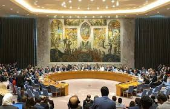
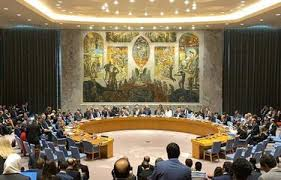

Galeri
Kerjasama Multilateral
 

✨Hubungan Kerjasama Multilateral✨
Hubungan multilateral adalah hubungan multilateral adalah kerja sama internasional yang melibatkan tiga negara atau lebih dengan tujuan bersama untuk mencapai kepentingan yang saling menguntungkan. Hubungan ini sering kali dilaksanakan melalui forum atau organisasi internasional seperti PBB (Perserikatan Bangsa-Bangsa), WTO (World Trade Organization), atau ASEAN (Association of Southeast Asian Nations), yang fokus pada penyelesaian masalah global seperti ekonomi, keamanan, dan lingkungan.
Berikut merupakan contoh penerapan hubungan kerjasama multilateral.
- Perserikatan Bangsa-Bangsa (PBB): Organisasi global yang menangani isu-isu keamanan, pembangunan, dan hak asasi manusia.
- Program Pangan Dunia (World Food Programme): Program bersama untuk mengatasi masalah kelaparan dan ketahanan pangan.
Hubungan kerjasama multilateral memiliki tujuan untuk menjaga perdamaian dan keamanan global, meningkatkan pertumbuhan ekonomi, menangani isu-isu global seperti perubahan iklim dan kemiskinan, serta memfasilitasi pertukaran pengetahuan dan teknologi. Kerja sama ini melibatkan banyak pihak untuk mencapai tujuan bersama yang mencakup bidang politik, ekonomi, sosial budaya, dan lingkungan hidup.
Hubungan kerjasama multilateral berhubungan dengan SDGs karena kerjasama multilateral menjadi mekanisme utama untuk mencapai agenda SDG. Kerjasama multilateral memfasilitasi kolaborasi global, berbagi sumber daya, teknologi, dan pengalaman antarnegara untuk mengatasi tantangan bersama yang bersifat global seperti kemiskinan, ketidaksetaraan, dan perubahan iklim, yang menjadi inti dari 17 tujuan SDGs.